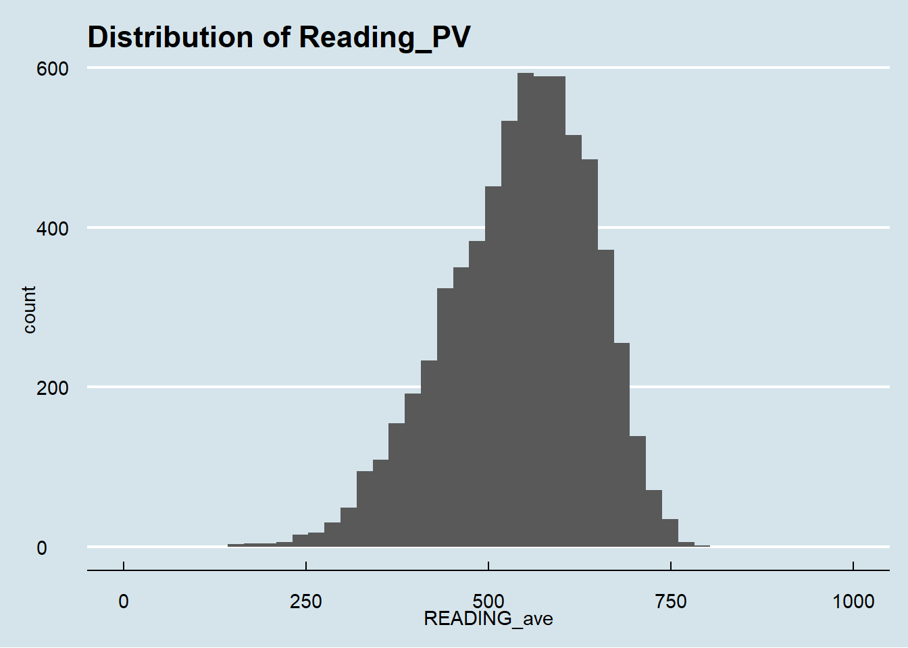
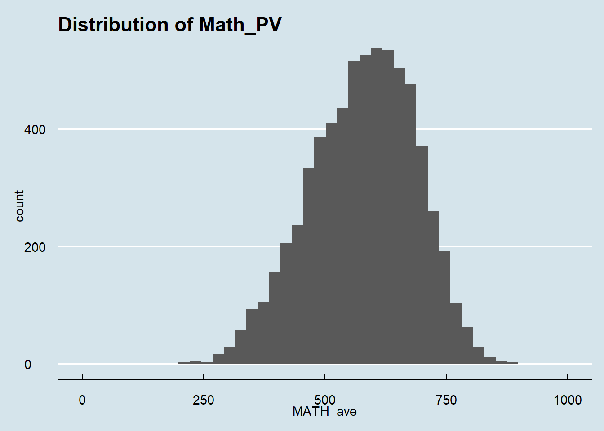
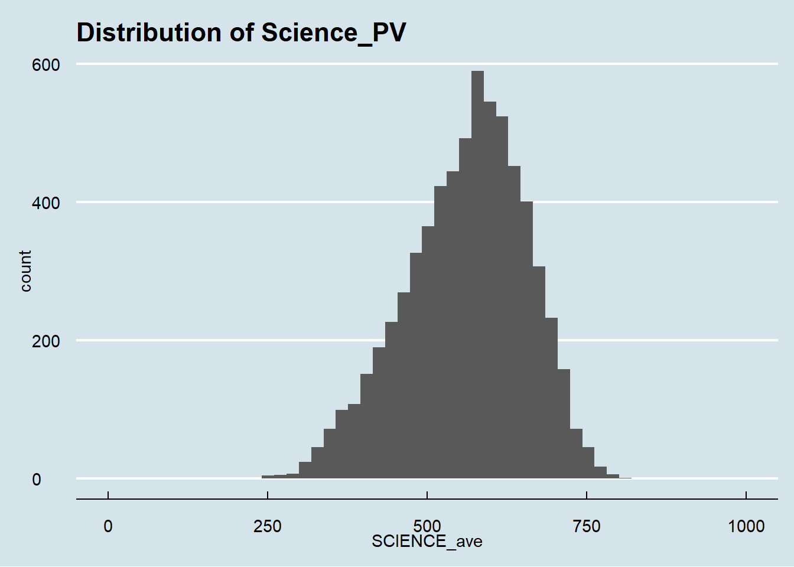
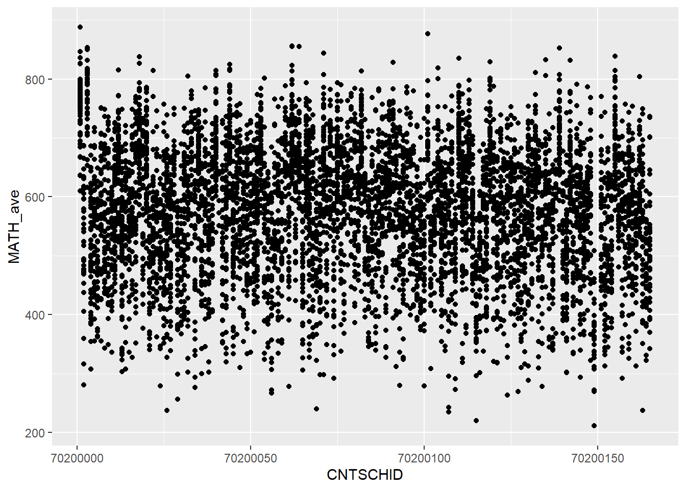
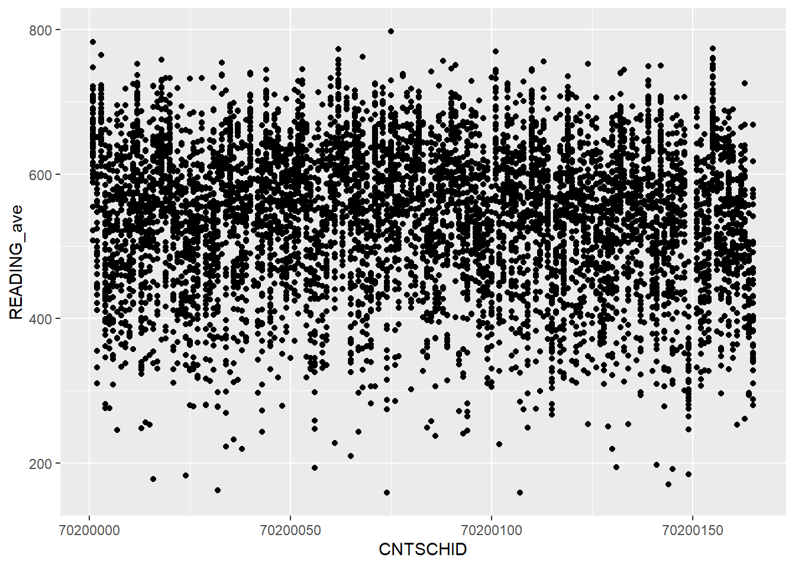
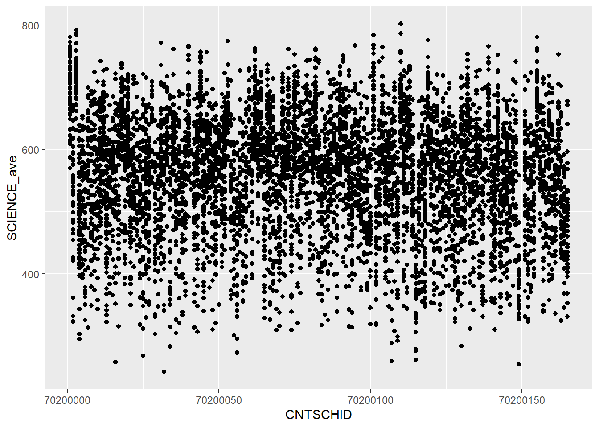
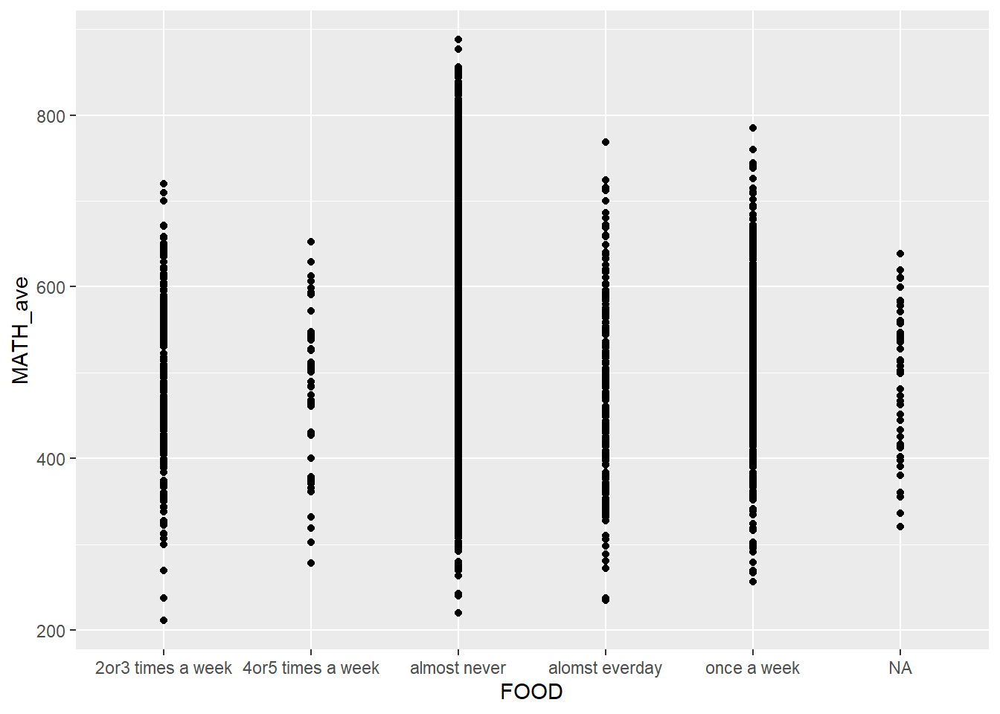
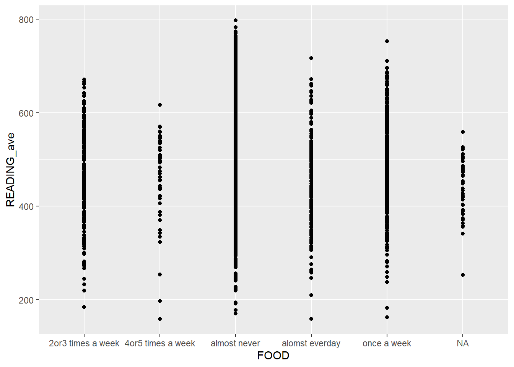

pacman::p_load(tidyverse,haven)
stu_qqq <- read_sas("data/cy08msp_stu_qqq.sas7bdat")
stu_qqq_SG <- stu_qqq %>%
filter(CNT == "SGP")
write_rds(stu_qqq_SG,
"data/stu_qqq_SG.rds")
stu_qqq_SG <-
read_rds("data/stu_qqq_SG.rds")Take-home
1.0 Preparation the Analytical Visualization.
1.1: Import and read file.
1.2: Install R-package
pacman::p_load(ggrepel,
patchwork,
ggthemes,
hrbrthemes,
tidyverse)1.3 Data cleaning
library(dplyr)stu_qqq_SG <- stu_qqq_SG %>%
rowwise() %>%
mutate(READING_ave = mean(c_across(PV1READ:PV10READ), na.rm = TRUE))
print(stu_qqq_SG)# A tibble: 6,606 × 1,280
# Rowwise:
CNT CNTRYID CNTSCHID CNTSTUID CYC NatCen STRATUM SUBNATIO REGION OECD
<chr> <dbl> <dbl> <dbl> <chr> <chr> <chr> <chr> <dbl> <dbl>
1 SGP 702 70200052 70200001 08MS 070200 SGP01 7020000 70200 0
2 SGP 702 70200134 70200002 08MS 070200 SGP01 7020000 70200 0
3 SGP 702 70200112 70200003 08MS 070200 SGP01 7020000 70200 0
4 SGP 702 70200004 70200004 08MS 070200 SGP01 7020000 70200 0
5 SGP 702 70200152 70200005 08MS 070200 SGP01 7020000 70200 0
6 SGP 702 70200043 70200006 08MS 070200 SGP01 7020000 70200 0
7 SGP 702 70200049 70200007 08MS 070200 SGP01 7020000 70200 0
8 SGP 702 70200107 70200008 08MS 070200 SGP01 7020000 70200 0
9 SGP 702 70200012 70200009 08MS 070200 SGP01 7020000 70200 0
10 SGP 702 70200061 70200010 08MS 070200 SGP01 7020000 70200 0
# ℹ 6,596 more rows
# ℹ 1,270 more variables: ADMINMODE <dbl>, LANGTEST_QQQ <dbl>,
# LANGTEST_COG <dbl>, LANGTEST_PAQ <dbl>, Option_CT <dbl>, Option_FL <dbl>,
# Option_ICTQ <dbl>, Option_WBQ <dbl>, Option_PQ <dbl>, Option_TQ <dbl>,
# Option_UH <dbl>, BOOKID <dbl>, ST001D01T <dbl>, ST003D02T <dbl>,
# ST003D03T <dbl>, ST004D01T <dbl>, ST250Q01JA <dbl>, ST250Q02JA <dbl>,
# ST250Q03JA <dbl>, ST250Q04JA <dbl>, ST250Q05JA <dbl>, ST250D06JA <chr>, …stu_qqq_SG <- stu_qqq_SG %>%
rowwise() %>%
mutate(SCIENCE_ave = mean(c_across(PV1SCIE:PV10SCIE), na.rm = TRUE))
print(stu_qqq_SG)# A tibble: 6,606 × 1,281
# Rowwise:
CNT CNTRYID CNTSCHID CNTSTUID CYC NatCen STRATUM SUBNATIO REGION OECD
<chr> <dbl> <dbl> <dbl> <chr> <chr> <chr> <chr> <dbl> <dbl>
1 SGP 702 70200052 70200001 08MS 070200 SGP01 7020000 70200 0
2 SGP 702 70200134 70200002 08MS 070200 SGP01 7020000 70200 0
3 SGP 702 70200112 70200003 08MS 070200 SGP01 7020000 70200 0
4 SGP 702 70200004 70200004 08MS 070200 SGP01 7020000 70200 0
5 SGP 702 70200152 70200005 08MS 070200 SGP01 7020000 70200 0
6 SGP 702 70200043 70200006 08MS 070200 SGP01 7020000 70200 0
7 SGP 702 70200049 70200007 08MS 070200 SGP01 7020000 70200 0
8 SGP 702 70200107 70200008 08MS 070200 SGP01 7020000 70200 0
9 SGP 702 70200012 70200009 08MS 070200 SGP01 7020000 70200 0
10 SGP 702 70200061 70200010 08MS 070200 SGP01 7020000 70200 0
# ℹ 6,596 more rows
# ℹ 1,271 more variables: ADMINMODE <dbl>, LANGTEST_QQQ <dbl>,
# LANGTEST_COG <dbl>, LANGTEST_PAQ <dbl>, Option_CT <dbl>, Option_FL <dbl>,
# Option_ICTQ <dbl>, Option_WBQ <dbl>, Option_PQ <dbl>, Option_TQ <dbl>,
# Option_UH <dbl>, BOOKID <dbl>, ST001D01T <dbl>, ST003D02T <dbl>,
# ST003D03T <dbl>, ST004D01T <dbl>, ST250Q01JA <dbl>, ST250Q02JA <dbl>,
# ST250Q03JA <dbl>, ST250Q04JA <dbl>, ST250Q05JA <dbl>, ST250D06JA <chr>, …stu_qqq_SG <- stu_qqq_SG %>%
rowwise() %>%
mutate(MATH_ave = mean(c_across(PV1MCUD:PV10MCUD), na.rm = TRUE))
print(stu_qqq_SG)# A tibble: 6,606 × 1,282
# Rowwise:
CNT CNTRYID CNTSCHID CNTSTUID CYC NatCen STRATUM SUBNATIO REGION OECD
<chr> <dbl> <dbl> <dbl> <chr> <chr> <chr> <chr> <dbl> <dbl>
1 SGP 702 70200052 70200001 08MS 070200 SGP01 7020000 70200 0
2 SGP 702 70200134 70200002 08MS 070200 SGP01 7020000 70200 0
3 SGP 702 70200112 70200003 08MS 070200 SGP01 7020000 70200 0
4 SGP 702 70200004 70200004 08MS 070200 SGP01 7020000 70200 0
5 SGP 702 70200152 70200005 08MS 070200 SGP01 7020000 70200 0
6 SGP 702 70200043 70200006 08MS 070200 SGP01 7020000 70200 0
7 SGP 702 70200049 70200007 08MS 070200 SGP01 7020000 70200 0
8 SGP 702 70200107 70200008 08MS 070200 SGP01 7020000 70200 0
9 SGP 702 70200012 70200009 08MS 070200 SGP01 7020000 70200 0
10 SGP 702 70200061 70200010 08MS 070200 SGP01 7020000 70200 0
# ℹ 6,596 more rows
# ℹ 1,272 more variables: ADMINMODE <dbl>, LANGTEST_QQQ <dbl>,
# LANGTEST_COG <dbl>, LANGTEST_PAQ <dbl>, Option_CT <dbl>, Option_FL <dbl>,
# Option_ICTQ <dbl>, Option_WBQ <dbl>, Option_PQ <dbl>, Option_TQ <dbl>,
# Option_UH <dbl>, BOOKID <dbl>, ST001D01T <dbl>, ST003D02T <dbl>,
# ST003D03T <dbl>, ST004D01T <dbl>, ST250Q01JA <dbl>, ST250Q02JA <dbl>,
# ST250Q03JA <dbl>, ST250Q04JA <dbl>, ST250Q05JA <dbl>, ST250D06JA <chr>, …2.0 Visualization.
2.1 The distribution of Singapore students’ performance in mathematics, reading, and science.
Summary: The PV distribution for math and reading is roughly the same, with a little more people reaching about 600 points in reading than math. The number of people with PV scores of about 600 in science is small, and it can be analyzed that it is more difficult to get a high score in science. Reading will be easier for students.
pacman::p_load(ggrepel, patchwork,
ggthemes, hrbrthemes,
tidyverse) p1<-ggplot(data=stu_qqq_SG,
aes(READING_ave))+
geom_histogram()+
ggtitle("Distribution of Reading_PV")+
coord_cartesian(xlim=c(0,1000)) +
theme_economist()
print(p1)`stat_bin()` using `bins = 30`. Pick better value with `binwidth`.
p2<-ggplot(data=stu_qqq_SG,
aes(MATH_ave))+
geom_histogram()+
ggtitle("Distribution of Math_PV")+
coord_cartesian(xlim=c(0,1000)) +
theme_economist()
print(p2)`stat_bin()` using `bins = 30`. Pick better value with `binwidth`.
p3<-ggplot(data=stu_qqq_SG,
aes(SCIENCE_ave))+
geom_histogram()+
ggtitle("Distribution of Science_PV")+
coord_cartesian(xlim=c(0,1000)) +
theme_economist()
print(p3)`stat_bin()` using `bins = 30`. Pick better value with `binwidth`.
p1 / p2 / p3`stat_bin()` using `bins = 30`. Pick better value with `binwidth`.
`stat_bin()` using `bins = 30`. Pick better value with `binwidth`.
`stat_bin()` using `bins = 30`. Pick better value with `binwidth`.
2.2 The relationship between the performances of Math,Reading and Science with different Gender.
Summary: Different subjects are tested differently for genders. In reading, it is clear that women’s ability is higher than men’s ability, and women have higher scores and a higher lower limit (minimum score). In math and science, the gender gap is small, with boys getting higher scores, but the difference in scores is small.
stu_qqq_SG <- stu_qqq_SG %>%
mutate(GENDER = case_when(
ST004D01T == 1 ~ "female",
ST004D01T == 2 ~ "male"
))p4<-ggplot(data=stu_qqq_SG,
aes(READING_ave,
GENDER
))+
coord_cartesian(xlim=c(100,1000)) +
geom_boxplot(notch=TRUE)p5<-ggplot(data=stu_qqq_SG,
aes(MATH_ave,
GENDER
))+
coord_cartesian(xlim=c(100,1000)) +
geom_boxplot(notch=TRUE)p6<-ggplot(data=stu_qqq_SG,
aes(SCIENCE_ave,
GENDER
))+
coord_cartesian(xlim=c(100,1000)) +
geom_boxplot(notch=TRUE)p4 / p5 / p6
2.3 The relationship between the performances of Math,Reading and Science with different School.
Summary: The results of the three subjects in most schools are maintained in a relatively moderate range, but it can be seen that some schools have very high scores in the three subjects. In the end, There is still a gap between different schools,but there are no schools with very large gaps and very poor results.
p7<-ggplot(data=stu_qqq_SG,
aes(x=CNTSCHID,
y=MATH_ave)) +
geom_point()
print(p7)
p8<-ggplot(data=stu_qqq_SG,
aes(x=CNTSCHID,
y=READING_ave)) +
geom_point()
print(p8)
p9<-ggplot(data=stu_qqq_SG,
aes(x=CNTSCHID,
y=SCIENCE_ave)) +
geom_point()
print(p9)
p7 / p8 /p9
2.4 The relationship between the performances of Math,Reading and Science with different Socioeconomic.
Summary: This plot shows that whether it is science, math or reading, it is related to whether there is money to have food. Students who have enough money to get food will get better grades. These students do not need to think about food. Students who ate for lack of money four or five times a week had lower high scores and higher low scores. These students usually did not have bad grades, but they were also hard to have good grades, indicating that Socioeconomic has a strong influence on performances of Math,Reading and Science.
stu_qqq_SG <- stu_qqq_SG %>%
mutate(FOOD = case_when(
ST258Q01JA == 1 ~ "almost never",
ST258Q01JA == 2 ~ "once a week",
ST258Q01JA == 3 ~ "2or3 times a week",
ST258Q01JA == 4 ~ "4or5 times a week",
ST258Q01JA == 5 ~ "alomst everday"
))p10<-ggplot(data=stu_qqq_SG,
aes(FOOD,
MATH_ave))+
geom_point()
print(p10)
p11<-ggplot(data=stu_qqq_SG,
aes(FOOD,
SCIENCE_ave))+
geom_point()
print(p11)
p12<-ggplot(data=stu_qqq_SG,
aes(FOOD,
READING_ave))+
geom_point()
print(p12)
p10 / p11 / p12